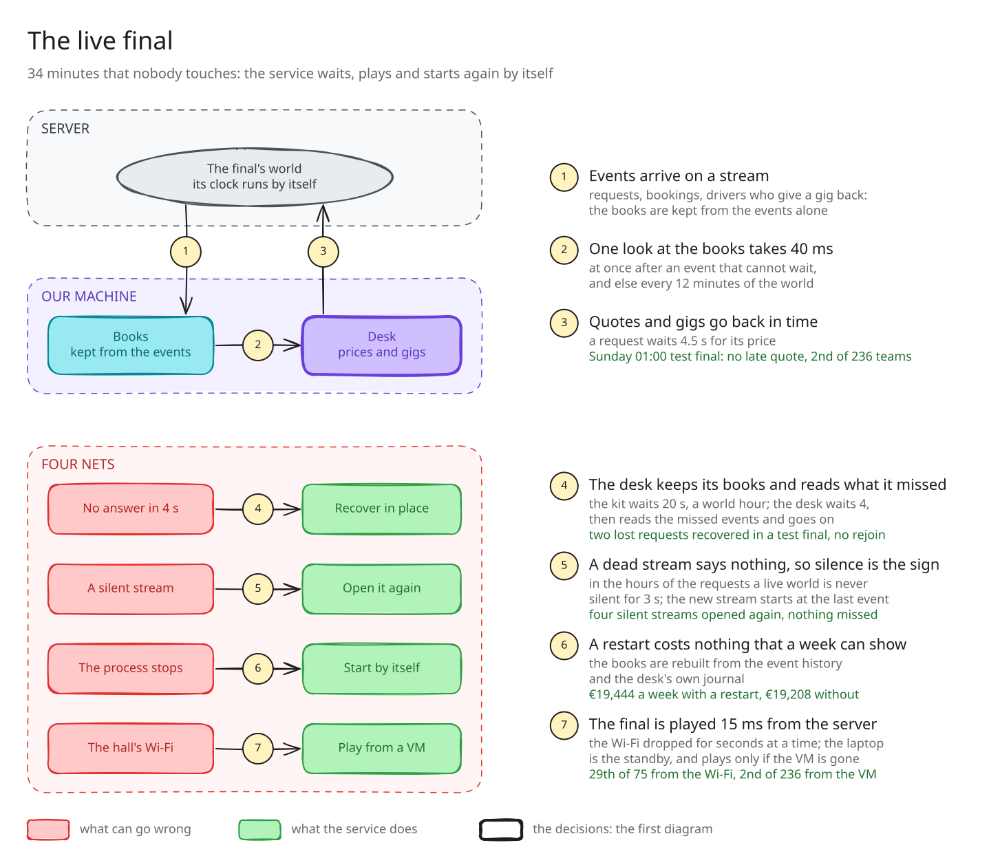

A dispatcher that prices by what it has measured
Dealers ask for prices, and a competitor answers them too. Each car that we win needs a freelance driver, found by posting a gig with a fee. The score is the margin; a team counts only with 90% of its orders on time. The desk makes two estimates, applies one rule, and keeps one guard.
One request, one price, one gig
Every request takes the same path. The numbers beside each step are what that step was measured to be worth, on the same practice weeks with it and without it.

Try the price rule
A car with a list price of €100. The dealer curve is the fitted one; move what the desk knows and watch the price that it quotes.
The 6% is itself measured: a 6% higher price lost 13% of the orders where the curve said 24%, and made €758 a week more. The desk learns today's level from every quote that wins or loses, and each order delivered on time is worth 1% of price with that dealer.
Each idea, with the weeks that judged it
Practice weeks are deterministic: the same seed gives the same week to the cent. So an idea is judged on the same weeks with it and without it, and a week is compared with itself.
From the kit starter to version 20
Mean margin a week on the same 20 level 8 weeks. Each version adds to the one above it.
What each idea is worth
Margin a week with the idea, less the margin without it. Two ideas earn nothing and are there to keep the week ranked.

Week by week
Pick a change. Each bar is one practice week: its margin with the change, less its margin without it, sorted from the worst week to the best.
Against the other teams
Ranking rounds are five secret weeks that every team plays once. Test finals run by the clock, as the final does: nobody can pause the world.
The Sunday 01:00 test final, hour by hour
Margin of the first ten teams through the week, from the public feed that we recorded. 236 teams took part and 41 were ranked. Our desk played from the VM: second, with no late quote and no lost request.
Orders won on each weekday of that final
Wednesday was the day with few drivers. The nine other teams won their most orders on it; our desk held back, as its guard is built to, and kept the highest on-time share but two. What a looser Wednesday costs in practice is in the list of ideas not taken.
Ranking rounds at level 8
Five secret weeks a round. The total changes with the round's weeks, so the place says more than the euros.
Three test finals
The same loop each time. What changed is the network between the desk and the server.
| Test final | Played from | Place |
|---|---|---|
| Saturday 14:00 joined on the week's Thursday | laptop | 9th of 55 |
| Saturday 20:00 the hall's Wi-Fi lost a request a minute | laptop | 29th of 75 |
| Sunday 01:00 after the loop was hardened | VM, 15 ms away | 2nd of 236 |
What was measured and left out
Most ideas end here. Each one stays in the log under its label, and is off in the settings. These are twelve of more than sixty in the README.
34 minutes that nobody touches
In the final a weekday hour lasts 18 seconds, so a request waits 4.5 seconds for its price. If our code stops, the world goes on and the competitor takes the requests. The service waits for the final, plays it, and starts again by itself.

What the nets were measured to do
| What went wrong | What happened |
|---|---|
| A request without an answer | Two recovered in place in one test final; no rejoin of the world |
| A stream that died without a word | Four opened again from their last event; nothing missed |
| A restart in the middle of a week | €19,444 a week with one, €19,208 without, on the same four weeks |
| The network dropping three times, and a restart across a midnight | €17,362 at 97.4% on time, on a week that makes €18,125 in practice mode |
| The hall's Wi-Fi | 29th from it; 2nd from a VM 15 ms from the server |
One look at the books takes 40 ms on average and 0.33 s at worst. The live loop keeps the rhythm of the practice weeks, so every measurement on this page was made at the pace that the final plays at.